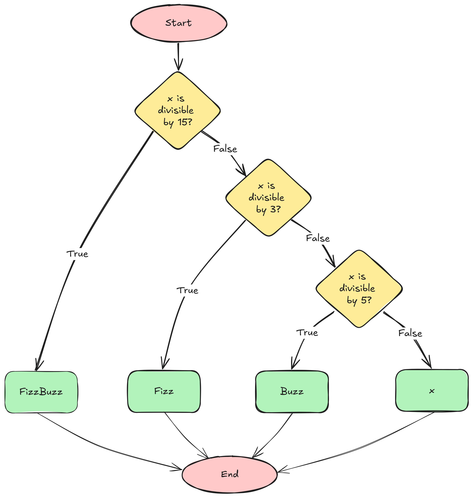

x <- 3
# FizzBuzz code goes here
if (x %% 15 == 0)
print("FizzBuzz") else if (x %% 3 == 0)
print("Fizz") else if (x %% 5 == 0)
print("Buzz") else
print(x)[1] "Fizz"Instructions:
You can answer the questions below in either R or Python. I will give you 50% extra credit if you provide answers in both languages. Otherwise, please feel free to delete the code chunks corresponding to the language you don’t wish to work in.
Once you have finished this assignment, render the document (Ctrl/Cmd-Shift-K or the Render button).
Commit the qmd file and any other files you have changed to the repository and push your changes.
In Canvas, submit a link to your github repository containing the updated files.
The “FizzBuzz Test” is a famous programming interview question.
Write a program that prints the numbers from 1 to 30. But for multiples of three print “Fizz” instead of the number and for the multiples of five print “Buzz”. For numbers which are multiples of both three and five print “FizzBuzz”
Start by filling in the following table for the numbers 1:30 manually, to get a feel for the task.
| Input | Output |
|---|---|
| 1 | 1 |
| 2 | 2 |
| 3 | Fizz |
| 4 | 4 |
| 5 | Buzz |
| 6 | Fizz |
| 7 | 7 |
| 8 | 8 |
| 9 | Fizz |
| 10 | Buzz |
| 11 | 11 |
| 12 | Fizz |
| 13 | 13 |
| 14 | 14 |
| 15 | FizzBuzz |
| 16 | 16 |
| 17 | 17 |
| 18 | Fizz |
| 19 | 19 |
| 20 | Buzz |
| 21 | Fizz |
| 22 | 22 |
| 23 | 23 |
| 24 | Fizz |
| 25 | Buzz |
| 26 | 26 |
| 27 | Fizz |
| 28 | 28 |
| 29 | 29 |
| 30 | FizzBuzz |
On paper or using a tool such as https://excalidraw.com, create a program flow map for the sequence of if-statements you need to evaluate for fizzbuzz. Add the picture to the folder containing this file, and name the picture flowchart.png. Add the picture to Git and commit/push your changes.

In the chunk below, write code which will solve this problem for a single value x. You should be able to change the value of x at the top of the chunk and still get the correct answer.
x <- 3
# FizzBuzz code goes here
if (x %% 15 == 0)
print("FizzBuzz") else if (x %% 3 == 0)
print("Fizz") else if (x %% 5 == 0)
print("Buzz") else
print(x)[1] "Fizz"x = 3
# FizzBuzz code goes here
if x % 15 == 0:
print("FizzBuzz")
elif x % 3 == 0:
print("Fizz")
elif x % 5 == 0:
print("Buzz")
else:
print(x)FizzModify the code above so that the result is stored in a value y.
x <- 3
y <- NA
# FizzBuzz code goes here
if (x %% 15 == 0)
y <- "FizzBuzz" else if (x %% 3 == 0)
y <- "Fizz" else if (x %% 5 == 0)
y <- "Buzz" else
y <- x
print(paste("For x = ", x, " my code produces ", y, sep = ""))[1] "For x = 3 my code produces Fizz"import numpy as np
x = 3
y = np.nan
# FizzBuzz code goes here
if x % 15 == 0:
y = "FizzBuzz"
elif x % 3 == 0:
y = "Fizz"
elif x % 5 == 0:
y = "Buzz"
else:
y = x
print("For x = "+ str(x)+ " my code produces "+ str(y))For x = 3 my code produces FizzThe code in the previous problem only solves FizzBuzz for a single value of x. Extend your code using a loop so that it will work for all values in a vector xx, storing values in a corresponding vector yy.
You can copy/paste code from previous chunks to make this chunk easier.
xx <- 1:30
yy <- rep(NA, times = 30)
# FizzBuzz code goes here
for (i in xx)
if (xx[i] %% 15 == 0)
yy[i] <- "FizzBuzz" else if (xx[i] %% 3 == 0)
yy[i] <- "Fizz" else if (xx[i] %% 5 == 0)
yy[i] <- "Buzz" else
yy[i] <- xx[i]
# Printing the results in a data frame
res <- cbind(x = xx, result = yy)
res x result
[1,] "1" "1"
[2,] "2" "2"
[3,] "3" "Fizz"
[4,] "4" "4"
[5,] "5" "Buzz"
[6,] "6" "Fizz"
[7,] "7" "7"
[8,] "8" "8"
[9,] "9" "Fizz"
[10,] "10" "Buzz"
[11,] "11" "11"
[12,] "12" "Fizz"
[13,] "13" "13"
[14,] "14" "14"
[15,] "15" "FizzBuzz"
[16,] "16" "16"
[17,] "17" "17"
[18,] "18" "Fizz"
[19,] "19" "19"
[20,] "20" "Buzz"
[21,] "21" "Fizz"
[22,] "22" "22"
[23,] "23" "23"
[24,] "24" "Fizz"
[25,] "25" "Buzz"
[26,] "26" "26"
[27,] "27" "Fizz"
[28,] "28" "28"
[29,] "29" "29"
[30,] "30" "FizzBuzz"import pandas as pd
xx = np.array(range(30)) + 1
yy = [np.nan]*30
# FizzBuzz code goes here
for i in range(len(xx)):
if xx[i] % 15 == 0:
yy[i] = "FizzBuzz"
elif xx[i] % 3 == 0:
yy[i] = "Fizz"
elif xx[i] % 5 == 0:
yy[i] = "Buzz"
else:
yy[i] = xx[i]
# Printing the results in a data frame
res = pd.DataFrame({"x": xx, "result": yy})
res x result
0 1 1
1 2 2
2 3 Fizz
3 4 4
4 5 Buzz
5 6 Fizz
6 7 7
7 8 8
8 9 Fizz
9 10 Buzz
10 11 11
11 12 Fizz
12 13 13
13 14 14
14 15 FizzBuzz
15 16 16
16 17 17
17 18 Fizz
18 19 19
19 20 Buzz
20 21 Fizz
21 22 22
22 23 23
23 24 Fizz
24 25 Buzz
25 26 26
26 27 Fizz
27 28 28
28 29 29
29 30 FizzBuzzIn the previous question, you extended your fizzbuzz code to iterate through a vector xx and produce a result yy. Can you generalize this, writing a function fizzbuzz that takes a variable x and returns a corresponding fizzbuzzified variable? Your function should be able to handle x that is a vector or a scalar value, and should store your solution in yy.
xx <- sample(1:100, 10) # get a random xx
yy <- rep(NA, 10)
fizzbuzz <- function(x) {
for (i in 1:length(x)) {
if (x[i] %% 15 == 0) {
yy[i] <- "FizzBuzz"
} else if (x[i] %% 3 == 0) {
yy[i] <- "Fizz"
} else if (x[i] %% 5 == 0) {
yy[i] <- "Buzz"
} else {
yy[i] <- x[i]
}
}
return(yy)
}
yy <- fizzbuzz(x = xx)
# Printing the results in a data frame
res <- cbind(x = xx, result = yy)
res x result
[1,] "64" "64"
[2,] "83" "83"
[3,] "99" "Fizz"
[4,] "69" "Fizz"
[5,] "95" "Buzz"
[6,] "48" "Fizz"
[7,] "19" "19"
[8,] "81" "Fizz"
[9,] "30" "FizzBuzz"
[10,] "31" "31" import pandas as pd
from random import choices
xx = np.array(choices(range(100), k = 10)) + 1
def fizzbuzz(x):
y = [np.nan]*len(x) # this just defines something to return
# Your code goes here
for i in range(len(x)):
if x[i] % 15 == 0:
y[i] = "FizzBuzz"
elif x[i] % 3 == 0:
y[i] = "Fizz"
elif x[i] % 5 == 0:
y[i] = "Buzz"
else:
y[i] = x[i]
return y
yy = fizzbuzz(x = xx)
# Printing the results in a data frame
res = pd.DataFrame({"x": xx, "result": yy})
res x result
0 14 14
1 90 FizzBuzz
2 57 Fizz
3 93 Fizz
4 58 58
5 77 77
6 39 Fizz
7 88 88
8 66 Fizz
9 77 77You cannot always assume that the person using your functions knows what they’re doing. Add a check to the function you wrote in the last question so that it will handle non-numeric input by issuing an error message.
In R, you can use the function stopifnot() to halt function execution if there is an error; this will give you a basic error message.
stopifnot(2 > 3)Error: 2 > 3 is not TRUEIn Python, you can use a try: statement with a except: clause. This functions like an if-else statement, where if no error occurs, the except statement is never executed.
try:
int("hello")
except ValueError:
print("Error: could not turn value into an integer")Error: could not turn value into an integerSee more examples of this in the Input Validation section of the textbook.
xx <- sample(1:100, 10) # get a random xx
yy <- rep(NA, 10)
fizzbuzz <- function(x) {
# Check if the input is numeric
stopifnot(is.numeric(x))
# Apply FizzBuzz logic
for (i in 1:length(x)) {
if (x[i] %% 15 == 0) {
yy[i] <- "FizzBuzz"
} else if (x[i] %% 3 == 0) {
yy[i] <- "Fizz"
} else if (x[i] %% 5 == 0) {
yy[i] <- "Buzz"
} else {
yy[i] <- x[i]
}
}
return(yy)
}
yy <- fizzbuzz(x = xx)
# Printing the results in a data frame
res <- cbind(x = xx, result = yy)
res x result
[1,] "75" "FizzBuzz"
[2,] "32" "32"
[3,] "7" "7"
[4,] "79" "79"
[5,] "8" "8"
[6,] "47" "47"
[7,] "95" "Buzz"
[8,] "52" "52"
[9,] "68" "68"
[10,] "9" "Fizz" import pandas as pd
import numpy as np
from random import choices
xx = np.array(choices(range(100), k = 10)) + 1
def fizzbuzz(x):
y = [np.nan]*len(x) # this just defines something to return
try:
for i in range(len(x)):
if x[i] % 15 == 0:
y[i] = "FizzBuzz"
elif x[i] % 3 == 0:
y[i] = "Fizz"
elif x[i] % 5 == 0:
y[i] = "Buzz"
else:
y[i] = x[i]
return y
except TypeError:
print("Error! Values must be numeric.")
else:
# We should never get here, because the try clause has a return statement
print("Else clause?")
return
yy = fizzbuzz(x = xx)
# Printing the results in a data frame
res = pd.DataFrame({"x": xx, "result": yy})
res x result
0 24 Fizz
1 8 8
2 14 14
3 82 82
4 87 Fizz
5 93 Fizz
6 71 71
7 28 28
8 90 FizzBuzz
9 54 Fizz